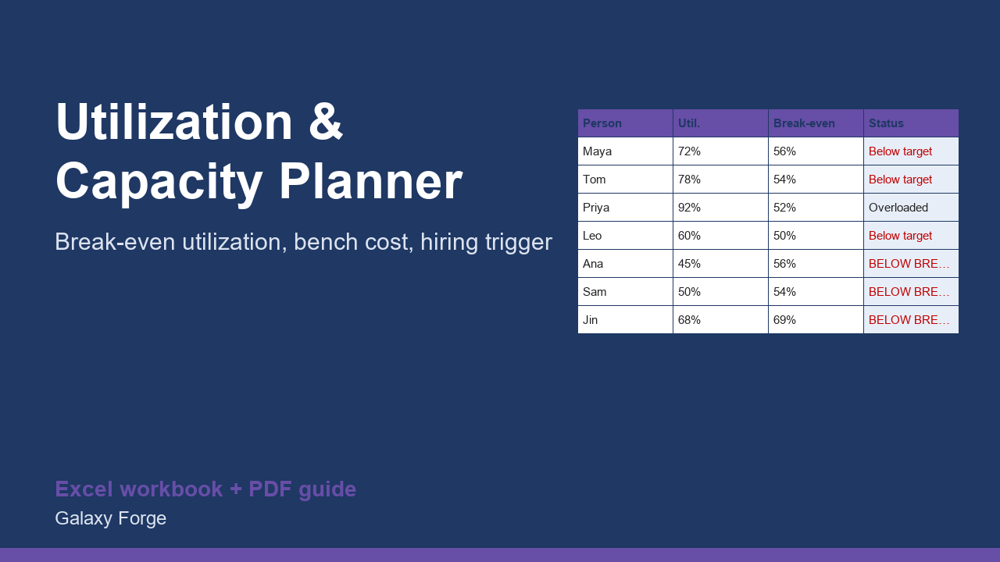

See each person's utilization against their break-even and target, what the unbilled hours cost, and when the pipeline really justifies a hire.
Agencies, consultancies and studios sell time. The single number that decides whether the business makes money is utilization: the share of available hours that are billed. Most owners watch revenue and never see that one person is billing 50% and costing more than they earn while another is at 92% and about to quit.
For every person you enter salary, overhead, weekly hours, a target billable share, the hours actually billed and the bill rate. The planner returns their loaded cost, the utilization at which they break even, their margin, the gap to target, the cost of the hours left unbilled (bench cost) and a status.
On the Summary sheet you enter the hours the pipeline will need and get a hiring signal based on spare capacity at target, not on gut feeling or a busy week.
1) On Settings, enter the working weeks per year and the pipeline hours you expect to need each week. 2) On Team, replace the seven example people with your own. 3) Use hours actually billed over the last 8 to 12 weeks, not the hours you hope to bill. 4) Read the Status column, then the Summary for bench cost, break-even and the hiring signal.
Free guide: Agency Utilization Rate: Formula, Break-Even Utilization and the Hiring Signal
Price: $39, one-time. Download: agency_utilization_capacity_planner.xlsx (Settings, Team, Summary) and this guide. Works in Excel 2016 or later, Excel for Mac and Excel on the web; opens in Google Sheets and LibreOffice.
New product, listed 2026-11-05: no sales or reviews yet. Example figures in the workbook are illustrative.
This workbook is a calculation tool, not accounting, HR, employment-law or tax advice. It models billable time and cost; hiring, pay and employment decisions involve legal and personal factors that no spreadsheet captures.